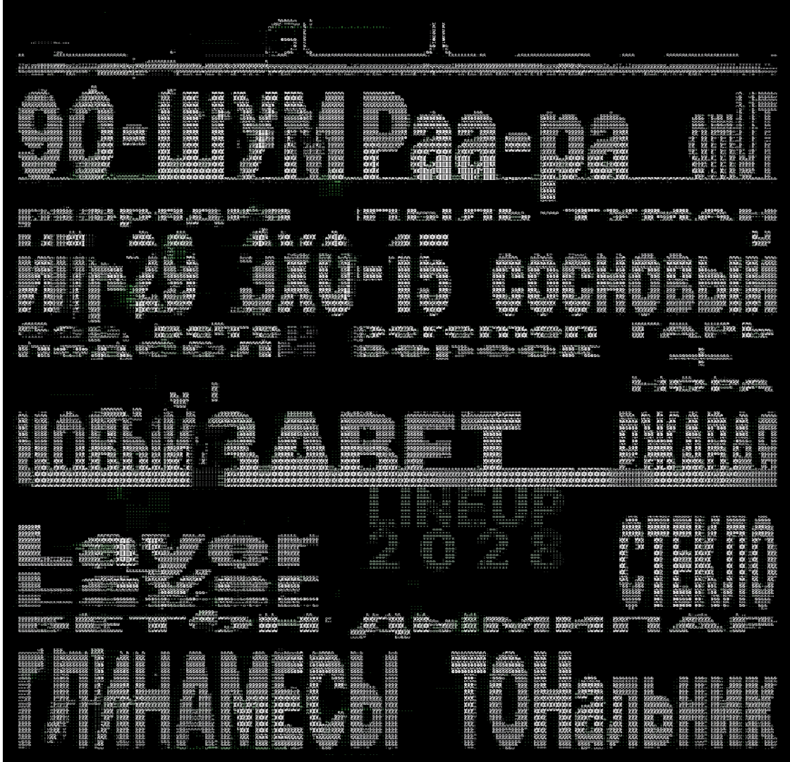

Локация
Арт-парк «Тихий Бор», Калужская область
Инфраструктура
- Сосновый лес и песчаные дороги
- Три сцены под открытым небом
- Лекторий в старой деревянной постройке
- Кемпинг в 5 минутах от сцен
Как добраться
Трансфер из Москвы (автобусы) / Парковка для авто
ГУЛ — низкая частота, живущая в лесу. Мы собираем музыкантов на стыке электроники и фольклора: IDM, полевые записи и ритуальный вокал. Цель не соединять старое и новое, а найти третье состояние: дрон как обряд, обряд как танец. Три дня в «Тихом Бору» — это погружение: днём лекции, перформансы и звуковые прогулки, ночью лайвы на трёх сценах, где свет, туман и деревья равноправны с артистами. Мы встраиваемся в ландшафт и оставляем его нетронутым. ГУЛ слышен даже когда музыка стихает: шум леса, дыхание земли и эхо голосов, звучавших задолго до нас.

GUL - MAIN
Большая поляна в сосновом лесу, открытая с одной стороны к небу. Здесь стоит основной свет и звук фестиваля — но без «стадионной» помпы: скорее лесная сцена, собранная из дерева и металла, с минимальным визуальным шумом. MAIN — это вечерние и ночные лайвы, от дарк-эмбиента и IDM до фолк-рока и техно. Именно здесь проходят закатные сеты и коллективные финалы.
карта фестиваля